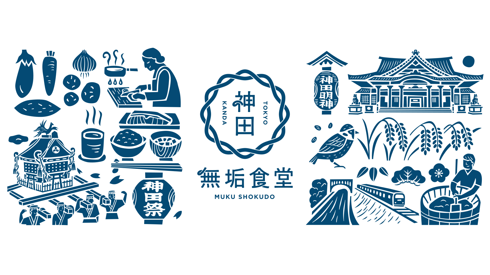

神田のオフィス街で働く人たちにも、旬の訪れを感じてもらいたい。
二十四節気に合わせて献立を変えながら、その時季ならではの食材をお届けします。
今日の一皿が、季節の便りになりますように。

神田は「神の田」ともいわれ、江戸総鎮守・神田明神を中心に、人々の暮らしを支えてきた町です。かつて神田青果市場が置かれたこの地は、江戸、そして東京の食を支える台所でもありました。
神田無垢食堂は、この町に受け継がれてきた食の文化を未来へつなぎ、食を通して、人と人、自然と暮らし、そして季節を結ぶ場所でありたい。オフィス街なのに、実は下町。そんな神田の豊かさを、一皿の中で。
円環する十二の結び目は、一年を巡る十二か月であり、暮らしの時を刻む時報でもあります。その結びが織りなす二十四のリズムに、日本人が古くから季節の拠りどころとしてきた二十四節気の感性を重ねました。
ブランドカラーは、神田祭で受け継がれてきた法被の色。誠実さ、粋、人と人とのつながりへの敬意を込めています。
{{ current.body }}
献立は二十四節気の移ろいとともに変わります。現在準備中です。
おしながきは現在準備中です。
開店に向けて、季節の献立をご用意してまいります。